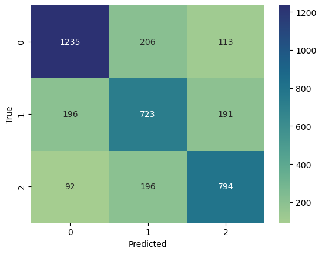

LSTMによる文書分類
LSTMによる文書分類#
import pandas as pd
import numpy as np
import torch
device = torch.device('cuda' if torch.cuda.is_available() else 'cpu')
import re
import nltk
from nltk.tokenize import word_tokenize
import gensim.downloader
word2vec = gensim.downloader.load('word2vec-google-news-300')
# Download NLTK data (if not already done)
nltk.download('punkt')
from sklearn.model_selection import train_test_split
from torch.utils.data import DataLoader, TensorDataset
import torch.nn as nn
import torch.optim as optim
---------------------------------------------------------------------------
KeyboardInterrupt Traceback (most recent call last)
Cell In[1], line 10
8 from nltk.tokenize import word_tokenize
9 import gensim.downloader
---> 10 word2vec = gensim.downloader.load('word2vec-google-news-300')
11 # Download NLTK data (if not already done)
12 nltk.download('punkt')
File /opt/anaconda3/envs/jupyterbook/lib/python3.10/site-packages/gensim/downloader.py:503, in load(name, return_path)
501 sys.path.insert(0, BASE_DIR)
502 module = __import__(name)
--> 503 return module.load_data()
File ~/gensim-data/word2vec-google-news-300/__init__.py:8, in load_data()
6 def load_data():
7 path = os.path.join(base_dir, 'word2vec-google-news-300', "word2vec-google-news-300.gz")
----> 8 model = KeyedVectors.load_word2vec_format(path, binary=True)
9 return model
File /opt/anaconda3/envs/jupyterbook/lib/python3.10/site-packages/gensim/models/keyedvectors.py:1719, in KeyedVectors.load_word2vec_format(cls, fname, fvocab, binary, encoding, unicode_errors, limit, datatype, no_header)
1672 @classmethod
1673 def load_word2vec_format(
1674 cls, fname, fvocab=None, binary=False, encoding='utf8', unicode_errors='strict',
1675 limit=None, datatype=REAL, no_header=False,
1676 ):
1677 """Load KeyedVectors from a file produced by the original C word2vec-tool format.
1678
1679 Warnings
(...)
1717
1718 """
-> 1719 return _load_word2vec_format(
1720 cls, fname, fvocab=fvocab, binary=binary, encoding=encoding, unicode_errors=unicode_errors,
1721 limit=limit, datatype=datatype, no_header=no_header,
1722 )
File /opt/anaconda3/envs/jupyterbook/lib/python3.10/site-packages/gensim/models/keyedvectors.py:2065, in _load_word2vec_format(cls, fname, fvocab, binary, encoding, unicode_errors, limit, datatype, no_header, binary_chunk_size)
2062 kv = cls(vector_size, vocab_size, dtype=datatype)
2064 if binary:
-> 2065 _word2vec_read_binary(
2066 fin, kv, counts, vocab_size, vector_size, datatype, unicode_errors, binary_chunk_size, encoding
2067 )
2068 else:
2069 _word2vec_read_text(fin, kv, counts, vocab_size, vector_size, datatype, unicode_errors, encoding)
File /opt/anaconda3/envs/jupyterbook/lib/python3.10/site-packages/gensim/models/keyedvectors.py:1960, in _word2vec_read_binary(fin, kv, counts, vocab_size, vector_size, datatype, unicode_errors, binary_chunk_size, encoding)
1958 new_chunk = fin.read(binary_chunk_size)
1959 chunk += new_chunk
-> 1960 processed_words, chunk = _add_bytes_to_kv(
1961 kv, counts, chunk, vocab_size, vector_size, datatype, unicode_errors, encoding)
1962 tot_processed_words += processed_words
1963 if len(new_chunk) < binary_chunk_size:
File /opt/anaconda3/envs/jupyterbook/lib/python3.10/site-packages/gensim/models/keyedvectors.py:1943, in _add_bytes_to_kv(kv, counts, chunk, vocab_size, vector_size, datatype, unicode_errors, encoding)
1941 word = word.lstrip('\n')
1942 vector = frombuffer(chunk, offset=i_vector, count=vector_size, dtype=REAL).astype(datatype)
-> 1943 _add_word_to_kv(kv, counts, word, vector, vocab_size)
1944 start = i_vector + bytes_per_vector
1945 processed_words += 1
File /opt/anaconda3/envs/jupyterbook/lib/python3.10/site-packages/gensim/models/keyedvectors.py:1923, in _add_word_to_kv(kv, counts, word, weights, vocab_size)
1921 logger.warning("vocabulary file is incomplete: '%s' is missing", word)
1922 word_count = None
-> 1923 kv.set_vecattr(word, 'count', word_count)
File /opt/anaconda3/envs/jupyterbook/lib/python3.10/site-packages/gensim/models/keyedvectors.py:334, in KeyedVectors.set_vecattr(self, key, attr, val)
331 self.expandos[attr] = np.zeros(target_size, dtype=prev_expando.dtype)
332 self.expandos[attr][: min(prev_count, target_size), ] = prev_expando[: min(prev_count, target_size), ]
--> 334 def set_vecattr(self, key, attr, val):
335 """Set attribute associated with the given key to value.
336
337 Parameters
(...)
351
352 """
353 self.allocate_vecattrs(attrs=[attr], types=[type(val)])
KeyboardInterrupt:
def create_dataset(df,label):
features = torch.tensor(df['embedding'].tolist(),dtype=torch.float32).to(device)
labels = torch.tensor(df[label].values, dtype=torch.long).to(device)
return TensorDataset(features, labels)
# Function for preprocessing text
def preprocess_text(text):
text = text.lower() # Lowercasing
text = re.sub(r'\W+', ' ', text) # Remove punctuation
tokens = word_tokenize(text) # Tokenization
return tokens
def tokens_to_embedding(tokens, model, embedding_size=300):
embeddings = [model[word] for word in tokens if word in model] # 単語リストのリストをループし、model[word]で各単語のベクトルを取得し、リストに格納
# embeddingsが空の場合は、ゼロベクトルを返す
if len(embeddings) == 0:
return np.zeros(embedding_size)
# embeddingsが空でない場合は、ベクトルの平均を返す。その結果は、ベクトルになる、センテンスの埋め込みとして使用できる
else:
return np.mean(embeddings, axis=0)
def tokenize_and_pad(text, max_len):
tokens = word_tokenize(text.lower())
padded_tokens = tokens[:max_len] + ['<PAD>']*(max_len - len(tokens))
return padded_tokens
def tokens_to_embedding_sequence(tokens, model, embedding_size=300):
embedding_sequence = np.zeros((len(tokens), embedding_size))
for i, token in enumerate(tokens):
if token in model:
embedding_sequence[i] = model[token]
elif token == '<PAD>':
embedding_sequence[i] = np.zeros(embedding_size) # Zero vector for padding
return embedding_sequence
max_sequence_length = 30 # You can choose an appropriate length
df=pd.read_csv("./Data/sentiment-emotion-labelled_Dell_tweets.csv")
df["sentiment"] = df["sentiment"].replace({"positive":2,"negative":0,"neutral":1})
df['processed_text'] = df['Text'].apply(preprocess_text)
#df["embedding"] = df["processed_text"].apply(lambda x: tokens_to_embedding(x, word2vec))
df['tokenized_text'] = df['Text'].apply(lambda x: tokenize_and_pad(x, max_sequence_length))
df['embedding'] = df['tokenized_text'].apply(lambda x: tokens_to_embedding_sequence(x, word2vec))
train_df, temp_df = train_test_split(df, test_size=0.3, random_state=42)
val_df, test_df = train_test_split(temp_df, test_size=0.5, random_state=42)
batch_size = 32
train_dataset_sentiment = create_dataset(train_df,label="sentiment")
val_dataset_sentiment = create_dataset(val_df,label="sentiment")
test_dataset_sentiment = create_dataset(test_df,label="sentiment")
train_loader_sentiment = DataLoader(train_dataset_sentiment, batch_size=batch_size, shuffle=True)
val_loader_sentiment = DataLoader(val_dataset_sentiment, batch_size=batch_size)
test_loader_sentiment = DataLoader(test_dataset_sentiment, batch_size=batch_size)
# DataLoaderから最初のバッチを取得
first_batch = next(iter(train_loader_sentiment))
# バッチの形状を表示
print(first_batch[0].shape)
torch.Size([32, 300])
class LSTMNN(nn.Module):
def __init__(self, input_size, hidden_size, num_layers, num_classes):
super(LSTMNN, self).__init__()
self.hidden_size = hidden_size
self.num_layers = num_layers
self.lstm = nn.LSTM(input_size, hidden_size, num_layers, batch_first=True)
self.fc = nn.Linear(hidden_size, num_classes)
def forward(self, x):
# Set initial hidden and cell states
# Forward propagate LSTM
out, _ = self.lstm(x)
out = self.fc(out[:, -1, :])
return out
model = LSTMNN(300, 100, 4, 3).to(device)
criterion = nn.CrossEntropyLoss()
optimizer = torch.optim.Adam(model.parameters(), lr=0.01)
from sklearn.metrics import accuracy_score, f1_score
num_epochs = 50
best_f1_score = 0.0
for epoch in range(num_epochs):
# Training phase
model.train()
train_loss = 0.0
for inputs, labels in train_loader_sentiment:
optimizer.zero_grad()
outputs = model(inputs)
loss = criterion(outputs, labels)
loss.backward()
optimizer.step()
train_loss += loss.item()
model.eval()
val_loss = 0.0
val_preds = []
val_labels = []
with torch.no_grad():
for inputs, labels in val_loader_sentiment:
outputs = model(inputs)
_, predicted = torch.max(outputs, 1)
val_preds.extend(predicted.numpy())
val_labels.extend(labels.numpy())
accuracy = accuracy_score(val_labels, val_preds)
f1 = f1_score(val_labels, val_preds, average='weighted')
print(f'Epoch {epoch+1}, Accuracy: {accuracy:.4f}, F1 Score: {f1:.4f}')
Epoch 1, Accuracy: 0.4131, F1 Score: 0.2415
Epoch 2, Accuracy: 0.4131, F1 Score: 0.2415
Epoch 3, Accuracy: 0.4131, F1 Score: 0.2415
Epoch 4, Accuracy: 0.4131, F1 Score: 0.2415
---------------------------------------------------------------------------
KeyboardInterrupt Traceback (most recent call last)
/Users/ryozawau/css_nlp/notebook/lstm_classification.ipynb セル 8 line 1
<a href='vscode-notebook-cell:/Users/ryozawau/css_nlp/notebook/lstm_classification.ipynb#X15sZmlsZQ%3D%3D?line=10'>11</a> outputs = model(inputs)
<a href='vscode-notebook-cell:/Users/ryozawau/css_nlp/notebook/lstm_classification.ipynb#X15sZmlsZQ%3D%3D?line=11'>12</a> loss = criterion(outputs, labels)
---> <a href='vscode-notebook-cell:/Users/ryozawau/css_nlp/notebook/lstm_classification.ipynb#X15sZmlsZQ%3D%3D?line=12'>13</a> loss.backward()
<a href='vscode-notebook-cell:/Users/ryozawau/css_nlp/notebook/lstm_classification.ipynb#X15sZmlsZQ%3D%3D?line=13'>14</a> optimizer.step()
<a href='vscode-notebook-cell:/Users/ryozawau/css_nlp/notebook/lstm_classification.ipynb#X15sZmlsZQ%3D%3D?line=14'>15</a> train_loss += loss.item()
File /opt/anaconda3/envs/jupyterbook/lib/python3.10/site-packages/torch/_tensor.py:492, in Tensor.backward(self, gradient, retain_graph, create_graph, inputs)
482 if has_torch_function_unary(self):
483 return handle_torch_function(
484 Tensor.backward,
485 (self,),
(...)
490 inputs=inputs,
491 )
--> 492 torch.autograd.backward(
493 self, gradient, retain_graph, create_graph, inputs=inputs
494 )
File /opt/anaconda3/envs/jupyterbook/lib/python3.10/site-packages/torch/autograd/__init__.py:251, in backward(tensors, grad_tensors, retain_graph, create_graph, grad_variables, inputs)
246 retain_graph = create_graph
248 # The reason we repeat the same comment below is that
249 # some Python versions print out the first line of a multi-line function
250 # calls in the traceback and some print out the last line
--> 251 Variable._execution_engine.run_backward( # Calls into the C++ engine to run the backward pass
252 tensors,
253 grad_tensors_,
254 retain_graph,
255 create_graph,
256 inputs,
257 allow_unreachable=True,
258 accumulate_grad=True,
259 )
KeyboardInterrupt:
model.eval()
test_preds = []
test_labels = []
with torch.no_grad():
for inputs, labels in test_loader_sentiment:
outputs = model(inputs)
_, predicted = torch.max(outputs, 1)
test_preds.extend(predicted.numpy())
test_labels.extend(labels.numpy())
from sklearn.metrics import confusion_matrix
import matplotlib.pyplot as plt
import seaborn as sns
# Confusion matrix
cm = confusion_matrix(test_labels, test_preds)
sns.heatmap(cm, annot=True, fmt='d', cmap="crest")
plt.xlabel('Predicted')
plt.ylabel('True')
plt.show()

# 訓練ループ
for epoch in range(10):
for i, (tweets, labels) in enumerate(train_loader_sentiment):
tweets = tweets.to(device)
labels = labels.to(device)
# Forward pass
outputs = model(tweets)
loss = criterion(outputs, labels)
# Backward and optimize
optimizer.zero_grad()
loss.backward()
optimizer.step()
# 各エポックの終わりに損失を表示
if (epoch+1) % 10 == 0:
print(f'Epoch [{epoch+1}/{10}], Loss: {loss.item():.4f}')
Epoch [10/10], Loss: 0.3541